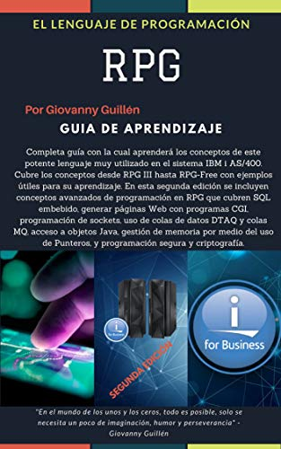

HOME
About Me
Services
Skills
Publications
Blog
Contact

Programación RPG
Portafolio de Proyectos
Ingeniería de Software
Gestión de Programas
×
Book Details
Buy this book
×
Book Details
Buy this book
×
Book Details
Buy this book
×
Book Details
Buy this book